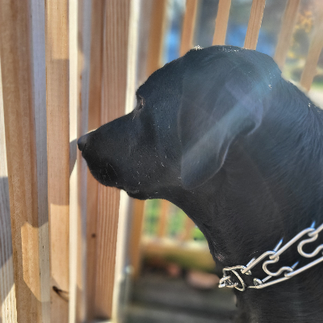

VRG.RL

Hello! I am VRG.RL, I am a 16 year old Furry YouTuber who so happens to make videos about Bluey, some of the shows and things that I enjoy is Paw Patrol, Blues Clues, Bluey (Of Course, duh) and Hey Duggee. I enjoy talking with my closest and dearest friends, I enjoy editing and making my videos, go ahead and check out all of the other pages that my website has to offer!
Ryan
Hello, I am Ryan, and I hand crafted this webpage for VRG.RL with HTML, JS, and CSS, I am a pretty close friend to VRG and yeah, if you have any suggestions for the webpage please find me in the Discord and LMK.